I'm a student of computer science and design at Dartmouth, focused on breaking down problems to find opportunities to make people's lives easier and more playful.
Selected Work · 2026 · Design Survivor
Recent projects.
Case 01 · Week 2 · Experience Design
The Tabasco Club
I turned an everyday hot sauce into an invitation-only membership by redesigning the packaging and ritual so that a grocery-shelf condiment feels iconic to those who go through a bottle a week.
Moving boxes designed to be turned into furniture or decor after use. Cardboard gets a second life as a chair, shelf, or chandelier instead of going into the recycling bin. Three iterations: V1 (modular panels), V2 (the pivot), V3 (Build-A-Box).
I redesigned Tabasco for its super-users — people who bring it everywhere and finish a bottle a week — turning a grocery-shelf condiment into an invitation-only membership with a premium, refillable ritual.
My RoleSolo designer
Research1:1 interview with a self-described super-user
For a super-user, the Tabasco product itself is already perfect — so the thing worth redesigning was the experience around it. The everyday version has no ritual: the twist-top crusts over, the cap leaks into your bag, and a bottle that someone treats like part of their identity still feels like a $4 grocery item.
The Problem
How do you make using a condiment feel iconic for someone who already loves it this much? My interviewee called her bottle "like my baby," used she/her pronouns for it, and walks through the rain rather than eat a meal without it. The peak of her experience was anticipation — the joy of cracking open a fresh bottle — and the low point was the mess. I wanted to design for that anticipation and engineer out the mess.
Research
I interviewed a super-user in depth — someone who buys in bulk, keeps a bottle in her dorm, her bag, and the dining hall, and wraps it in a towel so it won't spill. The pattern was clear: she loves the glass (it feels sturdy and lets her see how much is left), hates the cap, and finds the whole thing a part of who she is. I paired this with Pine & Gilmore's Experience Economy and Disney's "the experience starts before you arrive."
I mapped the current experience, then drew a redesigned journey map that front-loaded anticipation and removed the mess. I generated and iterated the product visuals in Nano Banana — it took a lot of back-and-forth to get the bottle, lid, and packaging reading as premium rather than novelty.
Three moves defined the redesign. Membership by proof: to join The Tabasco Club you submit three months of purchase receipts — the application itself builds anticipation and turns heavy use into status. A reusable click-flip metal lid: it clicks shut so travelers know it won't spill and flips open so the sauce never crusts like a twist-top. A refillable etched-glass body: keeping the glass (and the iconic diamond logo etched in) preserves the premium feel, while screw-in refill jars give it longevity. I borrowed the replaceable-head logic of an electric toothbrush, the loyalty logic of frequent-flyer programs, and far-field analogy to push toward more premium rather than cheaper.
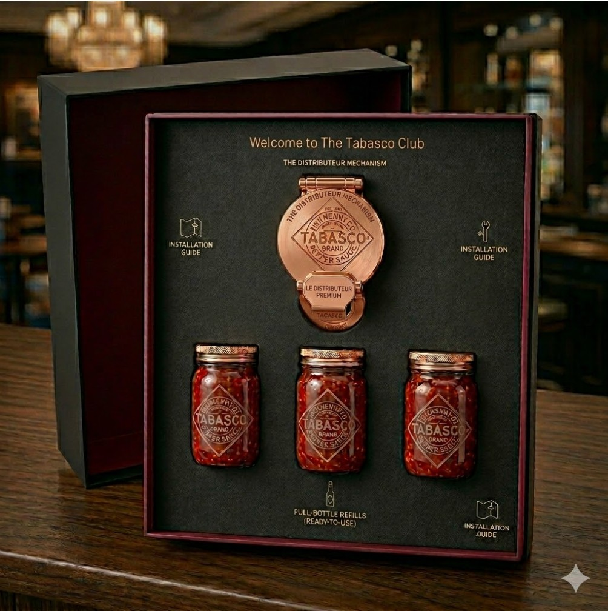
Figure 3. The Tabasco Club founder kit — the unboxing moment.
Tools, Workflow & Takeaway
Tools: A 1:1 interview to ground the design in a real super-user, journey mapping to find the emotional peaks and lows, and Nano Banana for product visualization.
Workflow: Interview → current-state journey map → redesigned journey map → iterative AI renders. With Nano Banana I had to keep refining prompts and selecting from variations to land a result that read premium instead of gimmicky.
Takeaway: Designing from one person's real ritual beats designing for an "average" user. I'd reuse the journey-map-then-render loop; next time I'd lock the visual direction earlier to cut down on AI iteration.
Outcome & Reflection
What changed: A condiment people grab without thinking became a membership worth applying for — every refill brings back the anticipation of opening the first package, instead of ending at the checkout.
What I learned: Creativity felt less like a sudden "aha" and more like structure-mapping — borrowing the deeper logic of toothbrushes and loyalty programs, not their surface, is what made the redesign feel new.
Case 02 · Week 3 · Everything Is a World
Tab Hoarders
I went deep into the world of people who keep hundreds of browser tabs open and discovered the behavior isn't disorganization — it's an emotional memory system, where every tab is a deferred decision someone is afraid to lose.
I chose tab hoarding because it's a mundane digital habit my friends and I all share — I still have tabs open on my phone from COVID. Most people read it as clutter to clean up. I wanted to treat it as a world with its own logic and go deep enough to find what that logic actually is.
The Problem
The invisible system here is emotional, not technical. People keep tabs open out of loss aversion — the "fear of the black hole" that closing a tab means the information vanishes — and the Zeigarnik effect, where unfinished tasks keep occupying working memory. The real problem isn't the tabs; it's not having a clear system for what to work on now.
Research
I scanned dozens of first-person accounts across r/ADHD, r/productivity, r/autism, r/DataHoarder, and r/adhdwomen, plus explainer videos and UX writing. To sharpen how I listened, I studied interview craft from Song Exploder, Portigal, and Ira Glass — open-ended questions, deliberate silence, and following what the subject actually says.
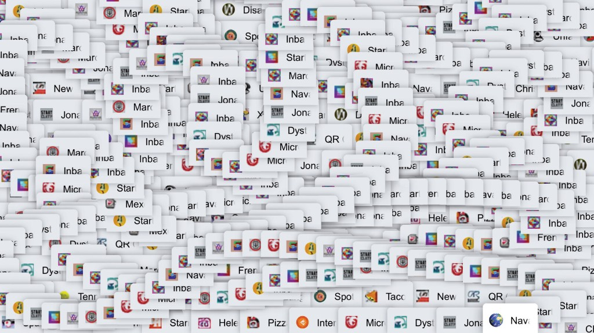
Figure 1. Documented "rabbit hole" — quotes and counts pulled from across communities.
Process
I synthesized the accounts into five archetypes of tab hoarder — the To-Do List maker, the Bookmarker, the Binge-and-Purger, the Tab Tsundoku enthusiast, and the Jedi master with a structured dual-window system. Clustering people this way surfaced the shared emotional driver underneath very different behaviors.
Key Decisions
Going deep revealed something I wouldn't have assumed: tabs and bookmarks serve genuinely different psychological functions. One person described tabs as "L1 cache" — fast-access working memory, not storage — which is exactly why bookmark managers keep failing. They demand an upfront decision that's too high-friction, and they become their own black holes. Any real intervention has to respect that tabs are alive and bookmarks feel dead.
Tools, Workflow & Takeaway
Tools: Community ethnography across Reddit and YouTube, plus close study of three interviewers as models for how to draw out honest detail.
Workflow: Broad rabbit-hole collection → documented quotes and counts → clustered into archetypes → distilled the shared emotional logic into a brief.
Takeaway: Reading a behavior as a system instead of a flaw changes what you design. I'd reuse the archetype-clustering step; next time I'd add a first-person interview to test the patterns against a real conversation.
Outcome & Reflection
What changed: I stopped seeing tab hoarding as a tidiness problem and started seeing it as deferred decisions and a fear of forgetting — which reframes the design goal from "close the tabs" to "make it safe to let go."
What I learned: Going deep into one ordinary world teaches you more than surveying ten — the texture only shows up when you stop trying to fix it and start trying to understand it.
Case 03 · Week 4 · The 30-Year Object
The Box That Grows With You
A modular, repairable carrying system designed to last a lifetime of moves — earning its 30 years through repairability and the sentiment of being there for every new chapter, from a dorm to a first apartment to a first house.
I designed for the everyday carrying case — the moving box, duffel, or bag that we treat as disposable. The current version is a 3-year throwaway: it tears at the edges, can't be repaired, and gets recycled or tossed the moment it's inconvenient.
The Problem
The challenge wasn't "make it harder to break," it was "make it matter enough to keep." When I called my mom about her 30-year objects, almost everything that survived — a jade tree from a pilgrimage to Hong Kong, a Tissot watch from a post-grad backpacking trip, an inherited jade pendant — was kept for emotional reasons and barely used. I wanted to design something that earns longevity through both repair and sentiment.
Research
I interviewed my mom about what she's held onto for decades and why, which surfaced the gap between objects that last and objects that get used. I looked at Kering's sustainability timeline for how durability gets built into a business, and drew form inspiration from IKEA bags and Lego bricks — things that last because individual parts are replaceable and reinforced.
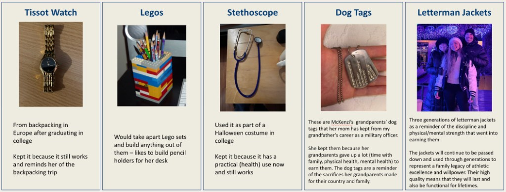
Figure 1. The objects my mom kept — and the reasons she kept them.
Process
I brainstormed across categories that don't last — clothes, electronics, packaging — and kept returning to the cardboard box and carrying case. Sketching toward IKEA and Lego logic, I worked through flat zippered panels, reinforced edges, and attachable wheels, testing which combinations could actually hold weight without the edges giving out.
Key Decisions
The design centers on flat panels that zip together on all sides, with metal-reinforced edges so it can take heavier loads, and optional attachable wheels. Unzipped, the panels stack flat for compact storage or lay out as decor in different colors. The emotional move is the through-line: "we grow with you" — the same system moves you into college, your first apartment, and your first house, so it accumulates meaning the way my mom's heirlooms did.
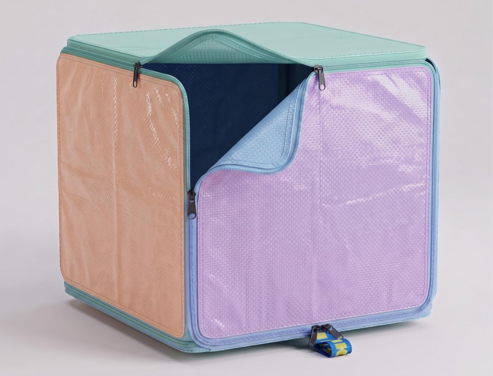
Figure 2. The modular carrying system.
Tools, Workflow & Takeaway
Tools: A family phone interview as primary research, plus sketching and material brainstorming.
Workflow: Interview → categorize objects that don't last → sketch toward repairable, modular form → pressure-test which configurations stay structurally sound.
Takeaway: Durability is as much emotional as physical. I'd reuse starting from a real interview about what people actually keep; next time I'd build a rough physical model to test the edge reinforcement.
Outcome & Reflection
What changed: The concept reframes a "disposable" object as a companion across life stages — something repairable enough and sentimental enough that throwing it out would feel like a loss.
What I learned: Most of what people keep from 30 years ago isn't used daily anymore — and with fast fashion and single-use everything, I'm not sure my generation will have a "haircomb that makes it 30 years" unless we design for keeping on purpose.
Case 04 · Week 5 · Invisible Senses
Bottling Lull Farm
My group recreated the smell of Lull Farm — a year-round New Hampshire farmers market I've visited every fall — blending four scents to make an invisible sense of place perceptible to someone who's never been there.
Lull Farm is five minutes from my house — a farmers market open year-round with an apple orchard and a sunflower field, and a bakery inside making fresh apple cider and apple cider donuts. It's a place I return to every fall, and its dominant sense isn't visual at all: it's the smell of wood, nature, and the orchard.
The Problem
I wanted to make the feeling of October in New Hampshire perceptible — the humidity, the light breeze, the apple-and-baked-goods air — to someone who had never set foot in the place. Scent and feel were the senses doing the emotional work, so those were what the prototype had to capture.
Research
I catalogued the place across senses: the feel of wood, produce, humidity, and a light breeze; the smell of something sweet but not sugary, apples and vanilla, fresh bread that isn't overpowering, antique wood that isn't musty; the sound of carts and the scanner and quiet talking; and the taste of those apple cider donuts. The point was to notice what no one usually names about the space.
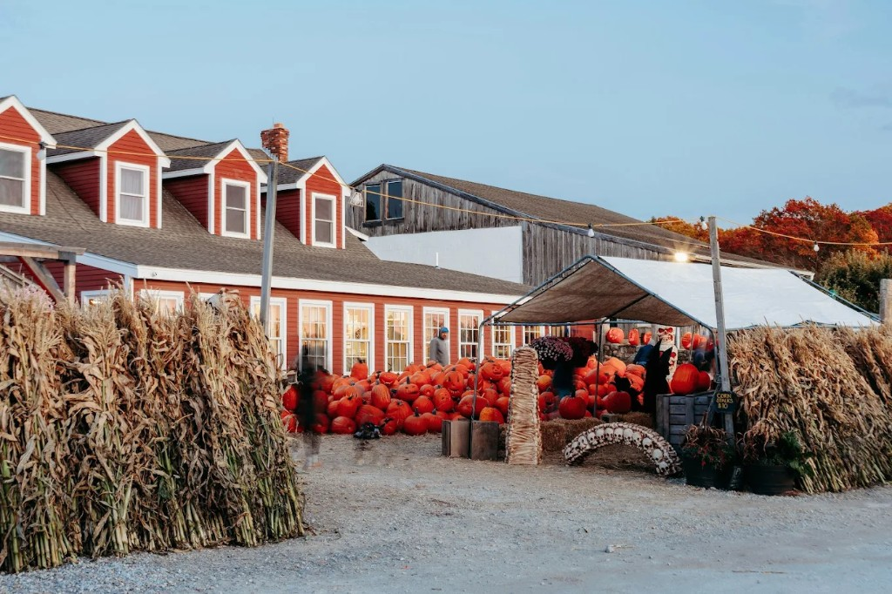
Figure 1. On-site sensory inventory.
Process
We started by smelling every available scent and setting aside the ones that vaguely matched the place. Then we combined two or three at a time, checking whether they balanced or whether one overpowered the others. We landed on a blend of four — Labdanum, Coumarin 15%, Green cognac, and Rosemary — that balanced cleanly, with no single note dominating.
Key Decisions
Feel and smell led the design — they're the load-bearing senses for this place. The strongest evidence came when I described it to a classmate, Lane, who had never been: just naming the humidity, the light breeze, and the sundown light reminded her of a place near her grandparents'. The description alone transported her, which confirmed which sensory cues to prioritize in the blend.
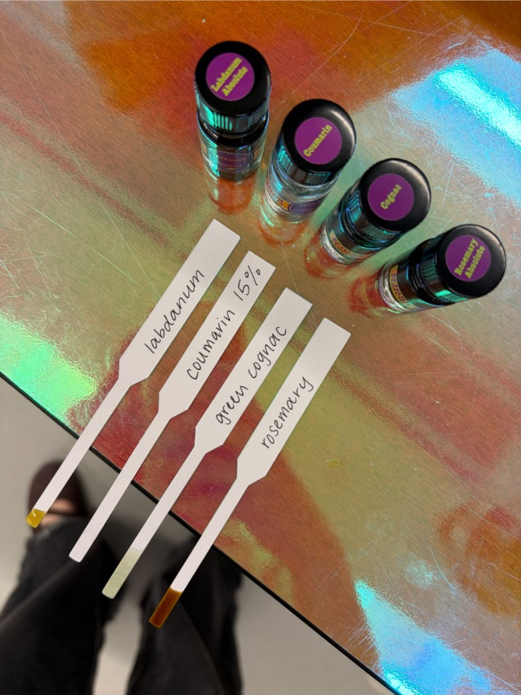
Figure 2. The final four-scent blend.
Tools, Workflow & Takeaway
Tools: Raw scent materials for blending, plus a structured on-site sensory inventory across feel, smell, sound, and taste.
Workflow: Sensory inventory → isolate matching scents → combine and balance in small batches → test the evoked feeling on someone unfamiliar with the place.
Takeaway: A few balanced notes evoke a place better than a literal reconstruction. I'd reuse testing the prototype on someone who's never been; next time I'd layer in sound to deepen the immersion.
Outcome & Reflection
What changed: A description and a four-scent blend were enough to carry someone to a place they'd never visited — the invisible sense did the work that a photo couldn't.
What I learned: I'd never noticed the power of scent and memory until this — the way my mom's citrus perfume or my dad's lavender instantly brings them to mind is exactly the mechanism a designed scent can borrow.
Case 05 · Week 6 · Your 10 Principles
My 10 Principles
{{One-sentence framing. Not Dieter Rams's principles — yours. What you've come to believe about design after six weeks of making and curating.}}
{{Why these 10? What were you noticing in your curation journal that nobody had named for you? This is taste articulated.}}
The 10 Principles
{{Principle 1 — short title + one-sentence explanation.}}
{{Principle 2}}
{{Principle 3}}
{{Principle 4}}
{{Principle 5}}
{{Principle 6}}
{{Principle 7}}
{{Principle 8}}
{{Principle 9}}
{{Principle 10}}
{{Your principles as a designed artifact — poster, zine cover, video still}}
{{Figure 1.}}
How I Arrived Here
{{Which projects, readings, or moments shaped each principle? Connect 2–3 of the principles back to specific work.}}
Tools, Workflow & Takeaway
Tools: {{1–2 lines. How you produced the artifact (poster · zine · video · essay · slides) — which tools you used, evaluated, or skipped.}}
Workflow: {{1–2 lines. How you moved from journal entries → drafted principles → designed artifact. For AI-assisted work, name the back-and-forth.}}
Takeaway: {{1–2 lines. What you'd reuse from this workflow / what you'd change.}}
Reflection
What I see in my own taste: {{What pattern does the list reveal that you hadn't named before?}}
What's still uncertain: {{Which principle do you hold most loosely? Why?}}
Case 06 · Weeks 7–10 · Final Project (V1 → V2 → V3)
Build-A-Box
Moving boxes designed to be rebuilt into furniture — a coffee table, shelves, even a chandelier — so the cardboard from a move gets a second life instead of being recycled or taking up space. The arc taught me that the most important design decision was knowing when to scrap the idea entirely.
My RoleCo-designer (with McKenzi)
PartnerMcKenzi
TimelineWeeks 7–10 · 4 weeks · 3 versions
ToolsFabric/foamcore, cardboard prototyping, Claude & ChatGPT, Vercel
McKenzi and I kept returning to the same question: how do you extend the life of something built to be thrown away? We started aimed at reusable, modular shipping boxes, but the framing that actually held was broader — sustainability and practicality for people in transition, especially renters moving into a new home with a pile of cardboard they're about to recycle.
Research
We pressure-tested materials and structure with help from a class mentor, Nick, and used Claude and ChatGPT as a fast first pass on material options — handing them the problem and our current idea and asking what we were missing. The real insight came from lived references: ENGS 2, where Dartmouth students build a cardboard chair, and my mom, who built cardboard furniture (mostly chairs) when she moved into her first apartment.
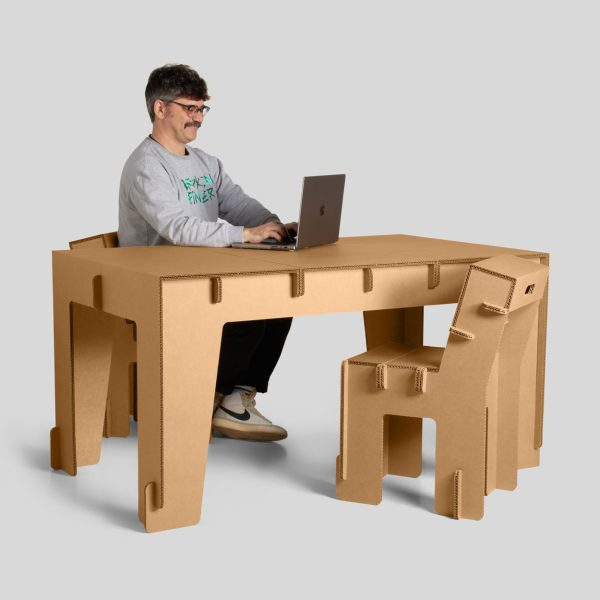
Figure 1. Material tests and the cardboard-furniture references that reframed the project.
V1 · Week 7 · Designing Useful Friction
The First Attempt
V1 was a reusable, modular box built from fabric over foamcore — we sewed the fabric, then switched to stapling for speed, and added zippers along the sides so panels could attach to each other and break down flat. The friction showed up fast: the edges weren't structurally sound, zippers couldn't carry weight, and fabric lacked the durability we'd promised. We considered magnets for the corners but ran into problems stacking boxes. Talking it through with Nick, it was clear the materials were fighting the goal.
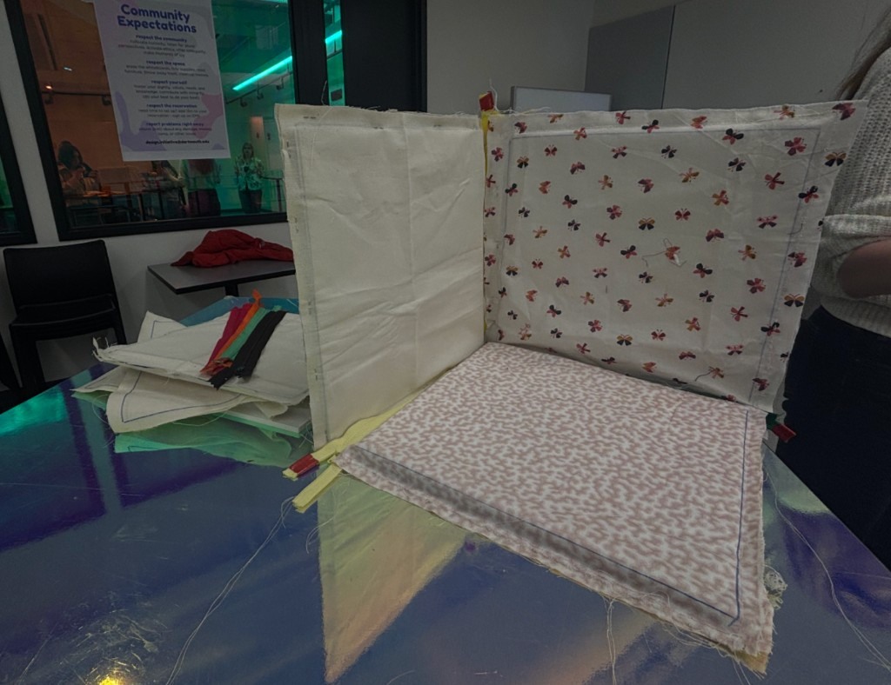
Figure 2. V1 — the modular fabric-and-foamcore box.
V2 · Week 8 · What Deserves More?
The Ugly Darling
This is where the "Ugly Darling" concept earned its place: after iterating the modular box, neither of us actually loved it, so we scrapped it entirely. We went back to our real goals — sustainability and practicality — and landed somewhere completely different: cardboard moving boxes that ship with hinges, velcro, and connectors so that after a move, the box becomes a chair, shelves, or a chandelier instead of trash. Small, medium, large, and extra-large boxes map to specific builds, with "mystery boxes" where you pick a size and the box becomes a surprise item.
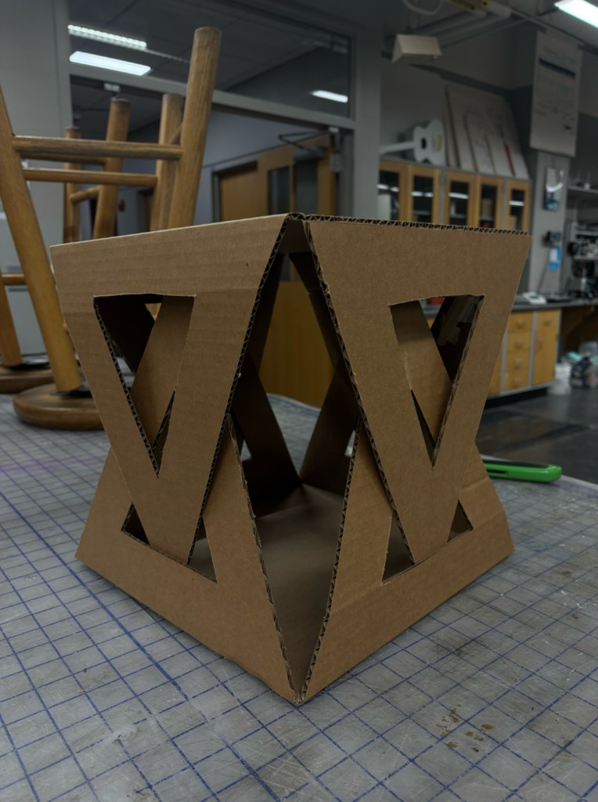
Figure 3. V2 — the pivot to cardboard-into-furniture.
V3 · Weeks 9–10 · Less But Better
The Final Edit
For V3, McKenzi and I built both a website and a working prototype kit. The boxes carry printed fold-and-cut lines based on which kit you buy, and each kit comes with everything you need — a box cutter, connectors, paint. As proof, we built a small coffee table / footstool from leftover cardboard (from Couch I); even with thin cardboard it held at least five pounds, and a production version would use thicker stock. What survived all three rounds was the core idea: lengthen a box's life by turning it into something you'd keep.
Tools: V1 leaned on fabric, foamcore, and zippers; V2 explored PVC, acrylic, wood, and neodymium magnets before we committed to cardboard; V3 added a built website (deployed on Vercel) and a hand-built furniture prototype. Claude and ChatGPT were a first-pass sounding board for materials throughout.
Workflow: Build → test for structural integrity → get outside feedback → reassess goals. The biggest workflow shift was learning to stop iterating on something that wasn't working and restart from intent — the move from V1 to V2 was a full pivot, not a refinement.
Takeaway: I'd reuse the habit of checking each version against our original goals rather than against the last version. What I'd change is starting physical material tests earlier, before investing in a direction.
Outcome & Reflection on the Arc
What changed across V1 → V2 → V3: We let go of the modular box entirely when it stopped exciting us, and rebuilt around sustainability and practicality — which led to Build-A-Box and a prototype that came out far better than I expected.
What I learned about iteration: Iterating isn't only refining; sometimes the most intentional move is taking a step back, re-asking what you're actually trying to accomplish, and starting from scratch.
What V3 stands on its own as: A sustainability-focused moving-and-home-goods concept — order a box, move with it, then build it into furniture — with a live site and a prototype that proves the cardboard can actually hold up.
About
Who I am.
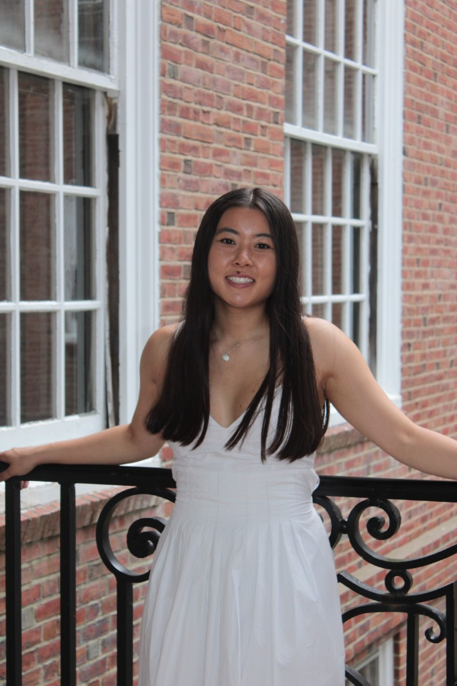
I'm a computer science and design student at Dartmouth, drawn to problems where breaking something down reveals a way to make it easier or more playful. I'm most curious about the everyday objects and systems people use without thinking — a hot sauce bottle, a pile of moving boxes, a hundred open browser tabs — and what changes when you take them seriously.
I work by going deep before going wide: a real interview, a place I actually know, one person's genuine ritual. I'm not afraid to scrap an idea I've stopped believing in and restart from intent. I use AI as a prioritization layer (what my honors thesis is about), but I trust the texture that only shows up in lived references and conversations.
Outside of designing, I'm a data-curious person who waits all year for Spotify Wrapped and has worn an Apple Watch since sixth grade. I always have a carabiner and a Swiss Army knife in my backpack whereever I go in case I spontaneously go on a hike, and every fall I end up at Lull Farm in Hollis, NH for apple cider donuts.
Inspiration Collection · Dear Data form · 10 weeks of looking
20 designs that inspire me before and after this course.
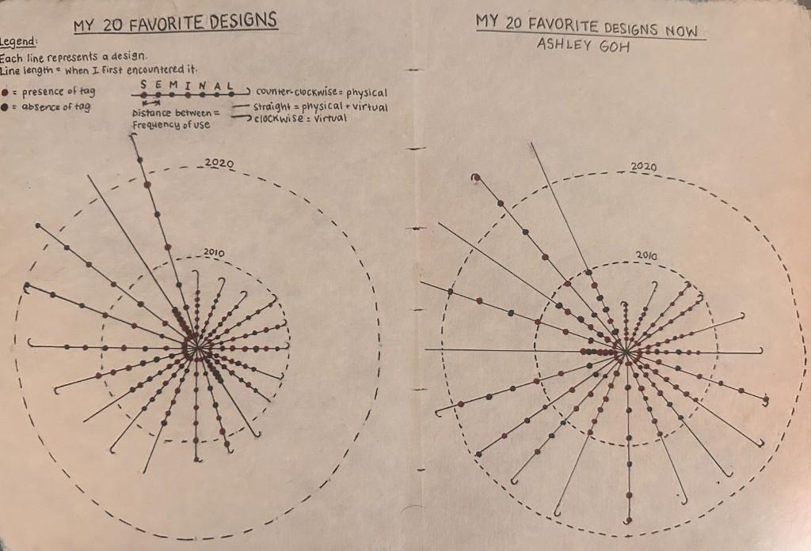
A hand-drawn data visualization of my inspiration collection, done in black and purple Sharpie (a little hard to distinguish on camera). Scrolling through Federica Fragapane's work pushed me toward a more geometric form that invites people to ask what the shapes mean.
Legend
Each line is one design, radiating from the center. Line length = when I first encountered it (rings mark 2010 and 2020). Purple dot = presence of a SEMINAL tag, black dot = absence, read outward in S·E·M·I·N·A·L order. Distance between lines = frequency of use. Direction encodes form: counter-clockwise = physical, straight = physical + virtual, clockwise = virtual.
The Collection — 40 Designs
40 rows total: 20 designs that inspired me at the start of the course (Side A · Week 1) and 20 added by the end (Side B · Week 10). Each row carries the same data my hand-drawn piece encodes: its SEMINAL system letters (S · E · M · I · N · A · L), how often I use it, whether it's physical, virtual, or a mix, and the year I first encountered it.
Concept tags reference — SEMINAL systems + Week 2–9 concepts (click to expand)
SEMINAL Systems (Week 1)
S — Service
experience journeys, touchpoints, delivery
E — Energy
environmental flows, carbon, power
M — Material
physical matter, form, manufacturing
I — Interaction / Sensory
how designs are experienced, perceived, used
N — Natural
ecology, organisms, food systems
A — Artificial
computation, AI, machine intelligence
L — Longevity
durability, repair, aging, aesthetics
Week 2 — Iconic Beginnings
Structure Mapping
borrowing the deep structure of one thing for another
Far-Field Analogies
pulling design moves from distant domains
Technology Brokering
combining existing tech in new ways
Experience Economy
designing for the felt event, not just the product
Affordances
what an object invites you to do with it
Anticipation as Design
designing the moments before the experience
Controlled Reveal
pacing what gets shown, when
Sensory Arc
the curve of sensory intensity across an experience
One Resonant Idea
the single thing the design is about
Week 3 — Everything Is a World
Disappearing Interviewer
getting out of the subject's way
Curiosity as Structure
the interviewer's curiosity IS the show
Interviewing Users
direct, generative conversation as research
Invisible Systems Made Visible
designing for what's overlooked
Dual Desires
catering to contradictory wants in the same person
Going Deep
rabbit-holing into a mundane domain
Week 4 — The 30-Year Object
Constraints Increase Variability
fewer materials, more interesting outputs
Emotionally Durable Design
designed to be loved long enough to repair
Craftsmanship
visible care in execution
Constraint as Identity
the limitation becomes the brand
Durability as Desirability
long-life as a selling point
Repair as Understanding
repairing it teaches you about it
Week 5 — Invisible Senses
Multisensory Design
engaging more than vision
Frame Innovation
changing the frame is the design move
Emotional Design
designing for feeling first
Obsessive Sensory Attention
noticing what others skip
Place as Story
the site is the narrative
Making Invisible Perceptible
surfacing what can't normally be seen
Week 6 — Curating & Taste
Curation as Self-Knowledge
what you collect reveals you
System Clustering
patterns inside your collection
Body of Work
the curated whole as the argument
Week 7 — Get Out of Your Head
Collective Intelligence
the group sees what the individual misses
Technology as Teammate
tools that share the work
Braintrust
Pixar-style structured candor
Useful Friction
slowing things down deliberately
Candor Without Authority
feedback without rank
Service Design Under Pressure
designing for crisis moments
Week 8 — Ugly Darlings
Ugly Darlings
the unfinished idea worth more time
Artful Making
execution as expression
Design with Intent
every move on purpose
Iteration at Scale
Dyson's 5,127 prototypes
Week 9 — Less But Better
Reflection-in-Action
Schön: thinking while doing
Audience as Hero
Duarte: the audience drives the story
Obsessive Reduction
cutting until only the load-bearing remains
The Edit as Design
what you remove IS the design
Side A Week 1 · Before
#
Design / Inspiration
SEMINAL
Frequency
Form · First seen
01
Legos
S · M · I · A · L
Sometimes
Physical · 2008
02
Bicycle playing cards
M · I · L
Sometimes
Physical · 2008
03
Skis
S · N
Sometimes
Physical · 2008
04
Pilot G2 pens
S · M · I · A · L
Most days
Physical · 2010
05
Mechanical pencils
S · M · I · A · L
Most days
Physical · 2010
06
Sticky notes
S · M · I · A
Most days
Physical · 2010
07
Bean bag chairs
S · M · I · A
Rarely
Physical · 2010
08
Projectors
I · A
Sometimes
Mix · 2010
09
Floor-to-ceiling windows
S · I
Never
Physical · 2012
10
Carabiners
S · N · A · L
Most days
Physical · 2012
11
Orthokeratology lenses
S · E · M · I · N · A · L
Every day
Physical · 2012
12
Stand mixer
S · I · N · A
Rarely
Mix · 2014
13
Speed Rubik's Cubes
S · I
Rarely
Physical · 2014
14
3D printers
E · M · A
Rarely
Mix · 2014
15
Swiss army knife
S · N · A · L
Sometimes
Physical · 2015
16
Apple Pay
E · I · A
Most days
Virtual · 2018
17
Weighted blankets
S · M · I
Every day
Physical · 2020
18
Nespresso
S · E · I · N
Every day
Mix · 2024
19
F1 cars
S · M · I · A
Never
Mix · 2024
20
Cursor
S · I · A
Most days
Virtual · 2025
Side B Week 10 · After
#
Design / Inspiration
SEMINAL
Frequency
Form · First seen
21
Chopsticks
S · E · M · I · N · A · L
Most days
Physical · 2006
22
Dry erase markers
S · M · I · A
Sometimes
Physical · 2008
23
Nalgene
S · M · N · A · L
Every day
Physical · 2010
24
Mason jars
S · E · M · I · N · A · L
Most days
Physical · 2010
25
Packing cubes
S · E · M · I · A · L
Rarely
Physical · 2014
26
Self-checkout
S · E · I · A · L
Sometimes
Physical · 2015
27
Keyboard shortcuts
S · E · I · A · L
Every day
Virtual · 2016
28
Matcha whisk
S · E · M · I · N · A · L
Sometimes
Physical · 2018
29
Burrata
S · M · I · N
Sometimes
Physical · 2018
30
QR codes
S · M · A · L
Sometimes
Virtual · 2018
31
Reminders app
S · A · L
Every day
Virtual · 2018
32
Gore-Tex
S · E · M · I · N · A · L
Sometimes
Physical · 2019
33
Birkenstocks
S · M · I · L
Most days
Physical · 2019
34
AirTags
S · M · I · A
Every day
Mix · 2020
35
Blundstones
S · M · I · L
Most days
Physical · 2022
36
Vespa
S · M · I · L
Never
Mix · 2022
37
AirPods Max
S · M · I · A
Most days
Mix · 2025
38
Cruise control
S · E · I · A
Rarely
Mix · 2026
39
VS Tease perfume
S · M · I · L
Every day
Physical · 2026
40
Raspberry Pi
S · M · A
Rarely
Mix · 2026
What the pattern reveals: Across my top designs, S (how the experience or service is designed) and A (how smart or useful the technology is) were by far the most common tags — I'm pulled toward things that are both thoughtfully experienced and genuinely useful. E (how it handles energy, waste, or resources) barely showed up, which surprised me and made me more conscious of the environmental cost of what I use, especially as a CS major aware of AI's water consumption. By Side B, that gap had closed: energy and resource use (E) shows up far more often — in chopsticks, mason jars, packing cubes, self-checkout, keyboard shortcuts, the matcha whisk, Gore-Tex, and cruise control — and more of my picks now carry the full S·E·M·I·N·A·L range, which tells me the course trained my eye to notice sustainability and whole-system design where I used to overlook it. {{Edit this to add your own read of the shift.}}